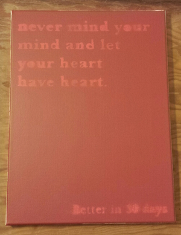

DRIFT STRANGELY
These start as vintage Levi's Denim Trucker Jackets. They are hand distressed, dyed, cut, and painted. They are available for purchase in diffent colors, styles, and designs, or as a custom order.

These start as vintage Levi's Denim Trucker Jackets. They are hand distressed, dyed, cut, and painted. They are available for purchase in diffent colors, styles, and designs, or as a custom order.
Moon-inspired art, a handmade T-shirt, and a custom denim vest. I've finished a new set of artwork and began working on more adventures.
I've completed many new projects, while improving on some painting techniques. These new paintings are crisper, cleaner, and more detailed. Like my other works, they usually have a story or meaning behind them, but I'm always intrigued on other people's interpretations.

The majority of my recent efforts have been directed towards creating new canvas paintings, though there has been preperation for some much larger projects.
This project seemed to fit better on one of my most used surf boards, instead of a traditional canvas. I'm not big on display only or sentimental value, so I'll let the ocean erode this away. Let's see how long it lasts.
The standard issue T, but better: hand drawn, cut, and sewn. Slim with some extra length for a perfect fit.
A new series of paintings of orignal phrases using acrylic on canvas has begun.
These original 12 T-shirts were designed, cut and sewn by hand and numbered in order of creation. All are of varying designs featuring different fits, lengths, necklines, sleeves and styles. Material is a cotton-polyester blend.

Lunar New Year was probably first conceived in a seedy Chinese restaurant somewhere years ago. It's a concept EP in an attempt to convince myself of a few ideas that no longer have any place in my head.

BETTERIN30DAYS